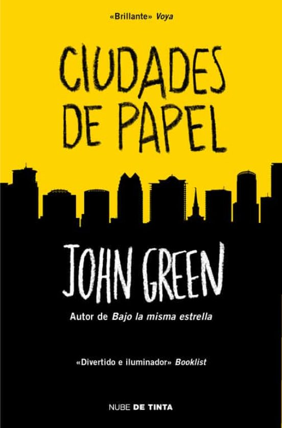
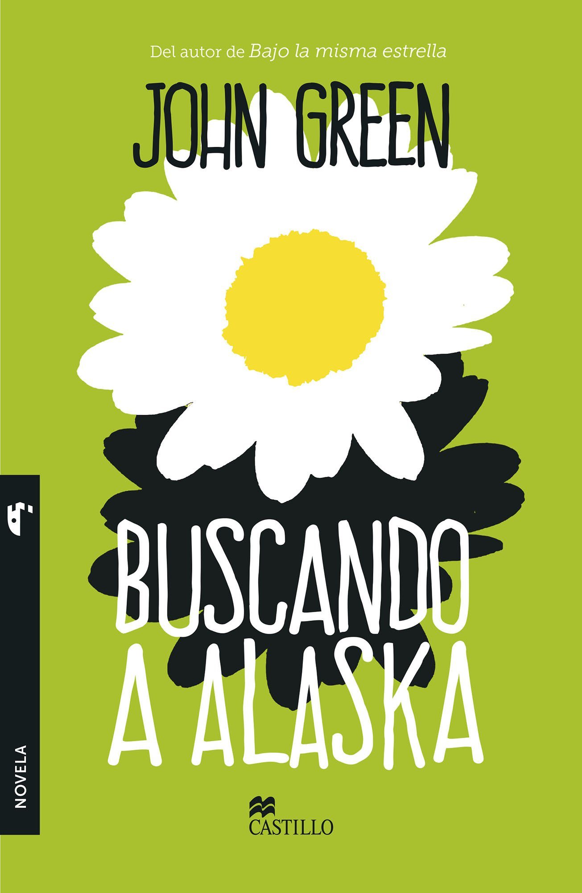
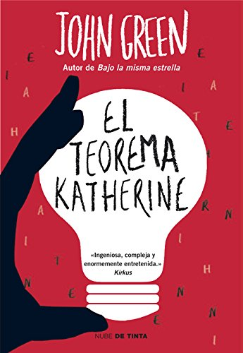
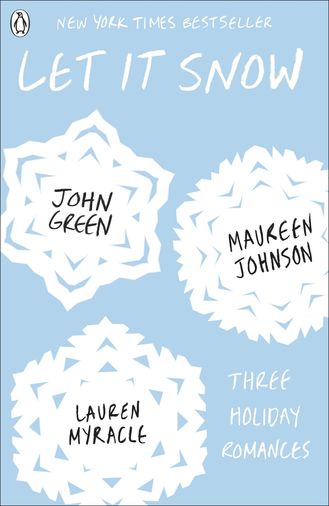

Biografia de John Green
John Green nació el 24 de agosto del año 1977 en la ciudad de Indianapolis, Indiana (Estados
Unidos). Es hijo de Sydney Green y de Mike Green,
quien fue director de un centro de Conservación Natural.En su niñez vivió en Orlando, Florida,
en
donde sufrió acoso escolar.
Las cosas mejoraron para John cuando su familia se trasladó al estado de Alabama, concretamente
a
Birmingham, y fue internado en la Indian Spings School.
Estudió Lengua Inglesa y Estudios Religiosos en la Kenyon College de Ohio. Trabajó como capellán
en
un hospital pediátrico y como asistente editorial.

Libros del autor
Bajo la misma estrella
Hazel tenía un libro favorito el cual compartió con Augustus titulado Un dolor imperial,
escrito por Peter Van Houten, un bohemio norteamericano
que residía en Ámsterdam, quien no solía dar conferencias de prensa ni responder las
cartas de sus admiradores. Él les responde que no les dirá que ocurre
después del final de Un dolor imperial a no ser que se vean en persona, por lo que los
invita a viajar a Ámsterdam. Lo cual, lleva a Gus a utilizar el deseo
que la fundación The Genies les entrega a los niños con cáncer y decide usarlo para
viajar con Hazel a Ámsterdam, a conocer al autor de la maravillosa novela.
Después de recibir el alta y algunas consultas a sus doctores, Hazel consigue el permiso
para viajar a Ámsterdam con su madre y con Gus.
Mil veces hasta siempre
Aza nunca tuvo intención de investigar el misterio del multimillonario fugitivo Russell
Pickett. Pero hay una recompensa de cien mil dólares en juego y
su mejor y más intrépida amiga, Daisy, no está dispuesta a dejarla escapar. Así, juntas,
recorrerán la corta distancia y las enormes diferencias que les
separan del hijo de Russell Pickett, Davis.
Aza lo está intentando. Trata de ser una buena hija, una buena amiga, una buena
estudiante y, tal vez, incluso una buena detective,
mientras vive en la espiral cada vez más estrecha de sus propios pensamientos.

Ciudades de papel
Una joven desaparece dejando una serie de pistas que solo su mejor amigo de la infancia
podrá descifrar...En su último año de instituto, Quentin no ha
aprobado ni en popularidad ni en asuntos del corazón. Pero todo cambia cuando su vecina,
la
legendaria, inalcanzable y enigmática Margo Spiegelman, se
presenta en mitad de la noche para proponerle que le acompañe en un plan de venganza
inaudito. Después de una intensa noche que reaviva el vínculo de
una infancia compartida y parece sellar un nuevo destino para ambos, Margo desaparece
dejando tras de sí un extraño cerco de pistas que solamente Quentin
posee la clave para descifrar.

Buscando a Alaska
Cansado de su aburrida existencia, Miles, de 16 años, se muda a un colegio internado
para ir
en busca de lo que el poeta Rabelais llamó el “Gran quizá”.
Ahí, su recién descubierta libertad y una enigmática chica, Alaska, lo lanzan de lleno a
la
vida. Pero cuando Miles siente que está por alcanzar su objetivo,
una tragedia inesperada amenaza con arrebatárselo.

El teorema Katherine
Según Colin Singleton existen dos tipos de persona: los que dejan y los que son dejados.
Él,
sin duda, pertenece al segundo.
Su última ex, Katherine XIX, no es una reina, sino la Katherine número diecinueve que le
ha
roto el corazón.
Para escapar de su mal de amores, y con el propósito de hallar un teorema que explique
su
maldición de las Katherines, Colin emprende junto a su
amigo Hassan una aventura que le llevará a Gutshot, un pueblecito de Tennessee, y a la
sospecha de que en la vida la inteligencia no siempre es la mejor
compañera de viaje.

Let It Snow
Una tormenta en Navidad sepulta a los residentes de Gracetown bajo metros de nieve
causando
el caos. Una alma aventurera se adentra en la tormenta,
saliendo de su tren atascado y se ve envuelta en sucesos que cambiarán algunas vidas.
Durante los próximos tres días una chica se hará un arriesgado
corte de pelo, tres amigos correrán para ganar una carrera hasta The Waffle House (y los
hash brown como premio) y el destino de un pequeño cerdito está
en las manos de una camarera con problemas amorosos.
Recibe nuestras novedades en libros en tu email.


Descuentos en libros, últimos títulos publicados y mucho más...